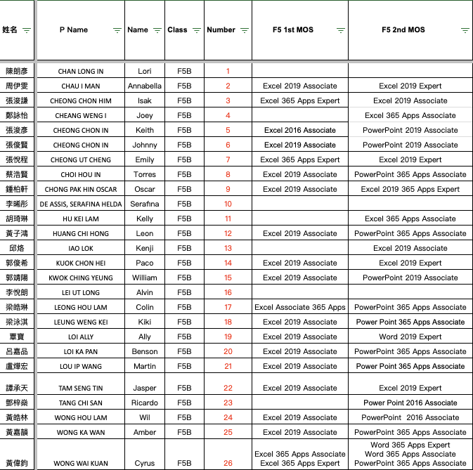

課程及基力對標
完成初中及高中課程梳理，對應概念、應用、合作與責任四個範疇。
INFORMATION TECHNOLOGY · 2025–2026
ANNUAL REPORT · 2025–2026
本年度將零散的工具教學，整理為一條縱向發展、對接基本學力、以實作成果為本的中學課程路線。
完成初中及高中課程梳理，對應概念、應用、合作與責任四個範疇。
由單一操作練習轉向程式、硬件、作品、報告及課堂實作。
把編程、AI、網絡安全、網頁及小程序延伸至比賽與代表隊培育。
各級逐步安排 EV3 機械人解難、Micro:bit／ESP32 感測器作品、C++ 程式設計、Office 與多媒體作品、網頁、小程序及數據分析專題。
評核方向由單一測驗擴展至「平時表現＋實作／專題」，觀察學生是否能夠：
COMPETITION IMPACT · 2025–2026
AWARD VOLUME
32橫跨 12 項賽事、6 個能力範圍，從本地競賽一直走到國際代表隊。
來源：2526_競賽成績_20260706.csv；排除初二丁及初三戊。同一學生多次獲獎會在「獲獎紀錄」分別計算。
| 競賽項目 | 層級 | 獲獎成績 | 能力範圍 |
|---|---|---|---|
| 澳門信息學奧林匹克選拔賽 | 本地 | 5 項銀獎 | 算法／編程 |
| 微信小程序全球創新挑戰賽（澳門區） | 本地 | 4 項特優獎、5 項一等獎 | 網站／小程序 |
| 全澳學生手機網站技術技能比賽 | 本地 | 2 項亞軍 | 網站開發 |
| 2026 年港澳青少年網絡技能競賽 | 本地 | 優異獎 | AI／網絡安全 |
| 港澳青少年網絡技能競賽 | 港澳大灣區 | 2 項金獎 | AI／網絡安全 |
| 大灣區青少年人工智能及網絡安全挑戰賽 | 港澳大灣區 | 2 項智慧實踐獎、2 項卓越商業應用獎 | AI／網絡安全 |
| International Cyber Olympiad in AI（澳洲） | 國際 | 入選澳門隊 | AI／網絡安全 |
International Cyber Olympiad in AI（澳洲）
港澳青少年網絡技能競賽
澳門信息學奧林匹克選拔賽
FORM 5 SHOWCASE · 2025–2026
BEST OF THE YEAR
F5B 全班完成個人網站，從 HTML／CSS 實作、內容組織到網上發佈，將學習成果變成可瀏覽、可分享的個人作品集。
Explore 26 personal websites ↗UNIVERSITY READINESS
MOS 與 Office 證書為大學申請、個人履歷及後續學習提供可驗證的數碼能力證明。

Excel Associate／Expert、PowerPoint 及 Word 等證書，展現數據處理、文件製作與簡報應用能力。
F5B 學生於全球創新挑戰賽澳門區取得特優獎。
F5B 學生於 2026 港澳青少年網絡技能競賽取得優異獎。
網站、證書與競賽互相印證，形成可用於升學的完整數碼履歷。
ANNUAL REPORT · 2025–2026
P6 學生已接觸 Excel、Micro:bit、Python、AI 及網絡安全；F1 應以診斷任務辨識差異，避免重複學習或過快進入 EV3 專題。
補足檔案管理、Office 及基礎程式概念。
直接進入 EV3、感測器及專題任務。
加入 AI、進階編程或競賽延伸任務。
P6 與 F1 教師確定 8–10 項核心能力。
P6 以 IT Capstone 呈現能力並保留學習檔案。
F1 首兩週完成簡報及程式小挑戰。
按結果安排基礎、進階及拔尖任務。
ANNUAL REPORT · 2025–2026
成績統計覆蓋 F1A–F5B 共 10 班，以全年總成績 Mark 計算，60 分或以上為合格。
| 年級 | 學生人數 | 平均分 | 合格人數 | 不合格人數 | 合格率 | 80 分或以上 |
|---|---|---|---|---|---|---|
| F1 | 56 | 75.0 | 56 | 0 | 100.0% | 15 |
| F2 | 67 | 78.7 | 67 | 0 | 100.0% | 31 |
| F3 | 63 | 73.1 | 49 | 14 | 77.8% | 19 |
| F4 | 72 | 78.4 | 72 | 0 | 100.0% | 33 |
| F5 | 42 | 75.7 | 41 | 1 | 97.6% | 12 |
| 整體 | 300 | 76.4 | 285 | 15 | 95.0% | 110 |
證書記錄涵蓋 29 名學生，其中 26 人取得至少一張 MOS 或相關 Office 證書，按記錄學生計的取證率為 89.7%。
排除初二丁、初三戊後，共 14 名獨立學生於校外比賽獲獎，累計 32 項獲獎紀錄。
競賽領域由程式設計擴展至算法、小程序、網站、AI、網絡安全、Office 及智能裝置，並涵蓋本地、區域和國際層級。
推動共同備課、課業審視、觀課評課及 AI 校本培訓。